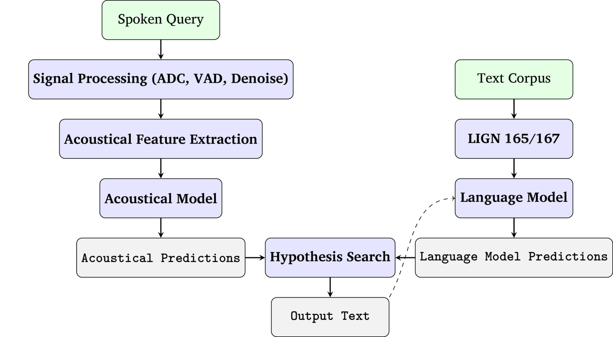
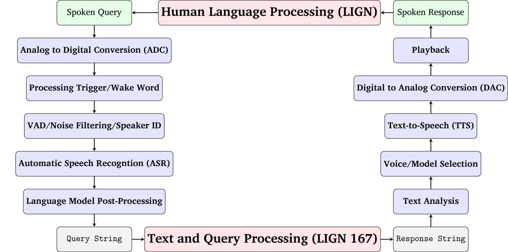

### Please fill out the (anonymous) Mid-Quarter Feedback Form <https://savethevowels.org/feedback> --- # Introduction to Automatic Speech Recognition ### Will Styler - LIGN 168 --- ### Today's Plan - Defining ASR - ASR Tasks - ASR Scope - Evaluating ASR --- ## Defining Automatic Speech Recognition --- ### Automatic Speech Recognition - Also known as 'Speech-to-Text' (STT) or 'Automatic Transcription' - Using a computer to take in speech (in a language) and give an output corresponding to that speech --- ### Why is ASR interesting? - Speech is generally faster than typing - Particularly for suboptimal (e.g. phone) typing - Speech-to-Speech interaction is more flexible - Speech is hands-free - Speech is more accessible (for some) - Speech data is harder to interact with (e.g. search) than text - Many legal/practical record keeping systems don't allow for speech - Speech is more expensive to store --- ### Why is ASR interesting, continued - We are used to interacting via speech - Computational Speech interfaces can be made much more intuitive - Particularly for people with no computational knowledge - A true dialog system can be *transparent* - "I don't know if I'm talking to a human or a computer and it doesn't matter" --- ### ASR is a complex process - Generally involves the modeling of the acoustics *and* language modeling - We use the acoustics, combined with our knowledge of language, to find the best answer --- ### Basic ASR Architecture  --- ### There are many ways to do this - You read about some historical methods - We'll talk soon about the pre-neural approaches - Then we'll talk about modern, neural approaches --- ### So, ASR takes in acoustics - It extracts acoustical features, and gets predictions on that basis - It uses language model information, to help understand what could be generated - ... and it finds the most probable output given both of these ideas --- ## ASR Tasks --- ### Categories of ASR Tasks - Detection Tasks - Transcription Tasks - Identification Tasks - Alignment Tasks - Dialog Systems --- ### Detection Tasks - **Voice Activity Detection:** Is the audio input speech, or not? - Not *really* ASR, but often lumped in and part of the pipeline - **Hot Word/Wake Word Detection:** Listen 24/7 for a particular word to be spoken - 'OK Google', 'Hey Siri', 'Alexa', 'Jarvis' - Specialized Hot-Word commands (e.g. 'Enable Running Lights') - **Keyword/Command Detection:** Listen for predefined words or sequences and perform actions - 'Turn on Windshield Wipers' - 'Tell me why you're calling. You can say 'Billing', 'Service'...' - 'Flag any call transcript which mentions 'Lawsuit' or 'Lawyer'' --- ### Transcription Tasks - **Voice Typing:** Turn this speech into text right now - Generally synchronous, single-talker - **Real-time Captioning:** Listen on this channel and produce captions - These are not persistent, and should disappear as new speech is produced - This can be fed into (e.g.) automatic translation models - **Automatic Orthographic Transcription:** Tell me what is said in this file - Generally asynchronous, potentially multi-talker - **Automatic Phonemic Transcription:** Tell me what speech sounds are produced - Can be language-specific, or language independent --- ### Not all transcription generates a (user-facing) transcript - Sometimes the transcription is immediately parsed for commands and discarded - Knight to F6 - "Set the Driver's Side Heat to 74 degrees" - "Play 'Animal' by Aurora using PowerAmp" - "Disable external lighting and arm all weapons" - **This is still a transcription task, fundamentally** --- ### Identification Tasks - **Speaker Identification:** Who is this person talking? - Related is 'Voiceprint Identification', lol - Also detecting speaker characteristics (age, gender presentation, height...) - **Speaker Diarization:** How many speakers are talking? Who's talking when? - **Language Identification:** What language(s) are being spoken? When? - **Emotion Detection:** Is the speaker happy, sad, angry, confused, unsure? --- ### Alignment Tasks - **Closed Captioning:** Produce an automated transcript which is *time aligned* with other media - May involve adding additional information (e.g. music, character names) - **Segmentation:** Break the speech signal into subparts based on language content - "Remove all English language in this field recording" - "Extract all instances of Person C talking" - **Forced Alignment:** Tell me what words/phonemes/phones are happening at what timestamps in the file - Boundary accuracy is important here - This can take a transcript as input, or work transcript-less (e.g. [Char-Siu](https://github.com/lingjzhu/charsiu)) --- ### ASR is a key component of 'dialog systems'  --- ## Scope and Complexity in ASR --- ### ASR systems can exist at many levels of complexity in terms of... - Vocabulary Complexity - Task Complexity - Speech Quality Complexity - Speech Nature Complexity - Linguistic Complexity - Computing Constraints --- ### Vocabulary Complexity in ASR - **Speech Detection:** Is somebody speaking? (VAD) - **Hot Word/Phrase Detection:** Did somebody say "Hey Google"? - **Limited Domain ASR:** "Choose which of these 20 phrases was spoken" - **Specialized Domain ASR:** You are a medical ASR system, so you need to do all the words PLUS these 6000 medical terms - **Arbitrary Text ASR:** "Whatever they're saying, write it down as a human would" --- ### 'Arbitrary Text' is an important difficulty - Even single-word detection is hard! - It's a much easier task to detect certain expected words - "You can say 'Make an Appointment', 'Parts', 'Service'" - Increasing the vocabulary increases the complexity - "Mel Frequency Cepstral Coefficient" - "Invasive Adenocarcinoma" - Human transcribers are not capable of transcribing completely arbitrary text - A fact known to anybody with an uncommon name --- ### Task Complexity in ASR - **Constrained Task:** Recognize one of these 20 commands - **Flexible Task:** You have 20 possible actions, choose which is being requested and the object of it - **Specialized Task:** You must take any input, and output the results in this particular format according to our specific needs - **Free Task:** You are an agent. Interact with the human, and figure out what you need to do, using tools we give you to act. --- ### Speech Quality Complexity in ASR - **Clean Speech:** Loud speech, quiet room, great mic - **Near-Field Speech:** Speech is clear and louder than noise, but noise is present - **Noisy, Far-Field Speech:** Speech is mixed with noise and non-speech, not always loudest element of the signal - **Degraded Speech:** Speech is choppy, highly compressed, or heavily convolved with noise - **Continuous Signal:** Speech to the system is interspersed with environmental noise and other conversations --- ### Speech Nature Complexity in ASR - **Clear Read Speech:** Generally slow, predictable, little repair - **Careful, Hyperarticulated Speech:** Speaking clearly, to be understood - This happens naturally when we don't trust that the listener will hear - **Spontaneous Speech:** Everyday speech in everyday contexts - **Multi-talker Speech:** More than one person, overlapping or sequential - **Exceptional Speech:** Slurred speech, Pathological Speech, Child Speech --- ### Linguistic Complexity in ASR - **Homogenous Speech**: All speech is linguistically similar - **Multidialectal Speech:** Speech could have multiple, divergent dialects - **Multilingual Speech:** Speech could be in multiple languages - **Mixed Multilingual Speech:** Speech could have multiple languages in a single recording --- ### Computing Constraints in ASR - **Latency:** Do you need to transcribe in real time, or is a delay fine? - **Processing Power:** Do you have a large cluster to process this on, or a budget smartphone? - **Network Speed/Access:** Does this have to happen locally? What bitrate can you send? - **Dataset Size:** How much training data do you have for the language/topic/dialect? - **Privacy:** Can you process the data on your servers? Can you save it for training? --- ### Let's think about the ASR complexity in... --- ### A voice system replacing heating controls in a car? Vocabulary Complexity Task Complexity Speech Quality Speech Nature Linguistic Complexity Computing Constraints --- ### A Courtroom Transcription system? Vocabulary Complexity Task Complexity Speech Quality Speech Nature Linguistic Complexity Computing Constraints --- ### The UCSD Podcast Captioning System? Vocabulary Complexity Task Complexity Speech Quality Speech Nature Linguistic Complexity Computing Constraints --- ### A system which detects non-English languages spoken at an ER triage station? Vocabulary Complexity Task Complexity Speech Quality Speech Nature Linguistic Complexity Computing Constraints --- ### An automated phone system for a Vons Pharmacy? Vocabulary Complexity Task Complexity Speech Quality Speech Nature Linguistic Complexity Computing Constraints --- ### An automated ordering kiosk at Carl's Jr? Vocabulary Complexity Task Complexity Speech Quality Speech Nature Linguistic Complexity Computing Constraints --- ### So, ASR is complex - Different systems have more and less complexity! - This means they perform more or less well - ... How do we know? --- ## Evaluating ASR --- ### ASR can be evaluated in many ways - Word and Sentence Error Rate - Real Time Factor - Perplexity - User Satisfaction/Reported Errors - Computational Cost --- ### Word Error Rate (WER) - "How many words does it screw up?" - **Substitutions:** Errors where the wrong word is used in place of the correct word. - **Deletions:** Errors where a word is omitted. - **Insertions:** Errors where an extra word is added. - WER = (# Substitutions + # Deletions + # Insertions) / Total Words --- ### Word Error Rate Considerations - How do we count modifications? - Generally as 'substitution' - What about reversals (e.g. 'Get on it' vs. 'Get it on')? - Again, generally two substitutions - Are some errors better or worse? - Is 'ketchup' > 'catch up' really no better than 'ketchup' > 'penguin'? - What about 'He go to the park?' instead of 'goes?' - This requires 'gold standard' transcripts! --- ### Sentence Error Rate (SER) - "How often does it get an entire sentence right?" - SER = (# Correct Sentences) / Total Sentences - This is *much more stringent* than WER --- ### Real Time Factor (RTF) - "How quickly does transcription happen?" - Processing Time / Length of Audio - If this is greater than 1, the system can't keep up - Can include transmission time, system latency, etc - Latency is a related measure, time from spoken word to written word --- ### Perplexity - "How confused is the language model?" - This is a model-internal measurement, and tells us how certain it is, given the acoustic and language model input - Lower perplexity means the model is more confident for a given word --- ### User Satisfaction and Reports - How do people feel about your model? - Do you get more 👍 or usage with model A or model B? - How often do users report errors? - How often do users immediately edit the text you generated? - Which users report the most errors? --- ### Computational Cost - Can this run on a consumer machine? On a phone? - How expensive is it to run the required servers? - How much bandwidth is required to get/send data? - How much electricity does it take to run the model? - How many people can use it at once (given fixed compute)? --- ### These measures allow us to evaluate models - The perfect model has low latency and cost, high RTF, and high accuracy (low WER/SER) - You often trade speed (latency/RTF) for accuracy (WER/SER) - Computationally Costly models tend to be more accurate - **There's no perfect model, but they absolutely improve over time!** --- ### Wrapping Up - ASR turns speech into text (or commands) - There are many tasks which ASR is a part of - Different tasks and systems have different complexities - Different complexity causes different performance - We measure performance in terms of accuracy, computational cost, and model understanding --- ### Next time - Why is this even hard?! --- <huge>Thank you!</huge>